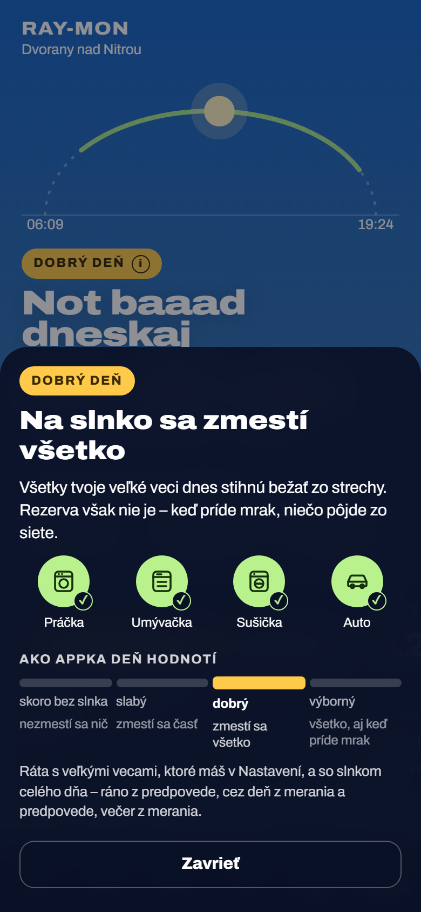
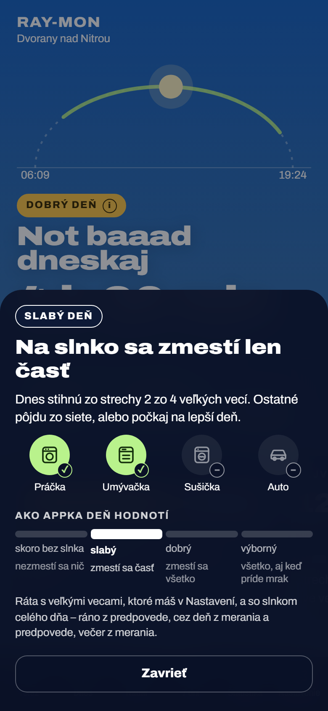
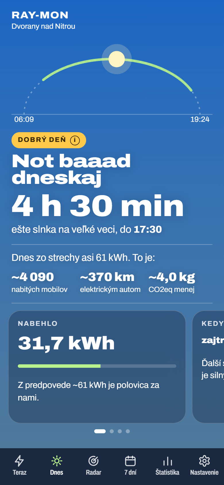
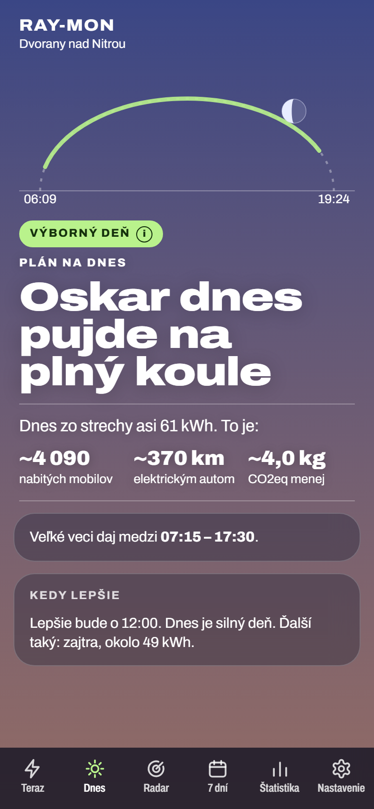
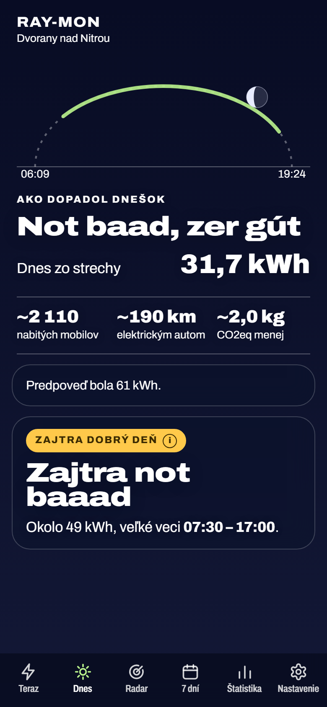
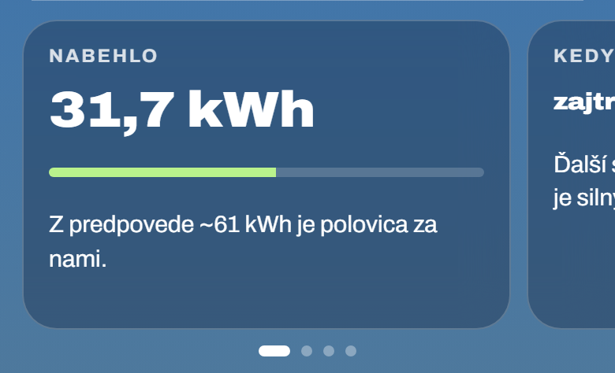
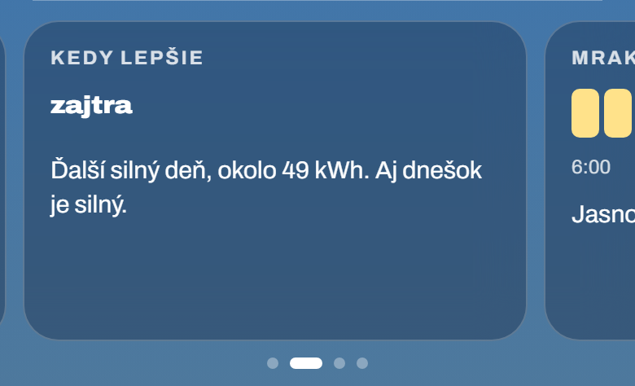
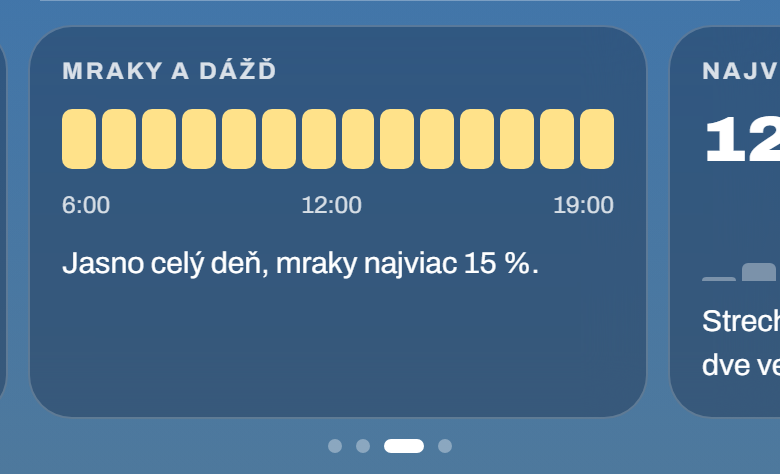
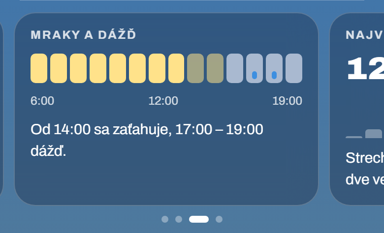
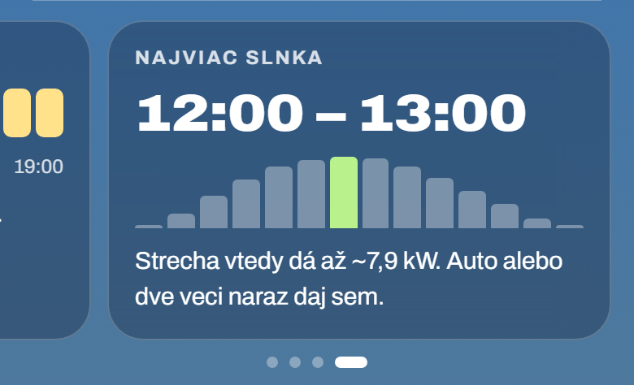

Karta Dnes – päť úprav
Snímky sú zo skutočnej appky (fixtures testov, 5. 9. 2026 o 13:00, ráno 6:00 a večer 20:30) s ručne vloženými zmenami. Čísla v karte Mraky a dážď pre zamračený deň a panel slabý deň sú vymyslené na ukážku, appka ich v ten deň neráta (deň je dobrý a jasný). Večerných 31,7 kWh oproti predpovedi 61 kWh je chyba testovacích dát – meranie v nich končí o 13:00.
Bod 1Ťuknutie na odznak vysvetlí triedu dňa
Odznak dostane malé (i), aby bolo vidno, že sa naň dá ťuknúť. Panel povie, čo trieda znamená pre tvoje spotrebiče (✓ zmestí sa na slnko, – nezmestí) a ukáže stupnicu všetkých štyroch tried, aby bolo jasné, kde je hranica medzi slabým a dobrým dňom. Večer to isté pre odznak „zajtra …“.


| Trieda | Nadpis v paneli | Veta |
|---|---|---|
| výborný deň | Na slnko sa zmestí všetko, aj s rezervou | Všetky tvoje veľké veci dnes stihnú bežať zo strechy, aj keby prišiel mrak a strecha dala o tretinu menej. |
| dobrý deň | Na slnko sa zmestí všetko | Všetky tvoje veľké veci dnes stihnú bežať zo strechy. Rezerva však nie je – keď príde mrak, niečo pôjde zo siete. |
| slabý deň | Na slnko sa zmestí len časť | Dnes stihnú zo strechy 2 zo 4 veľkých vecí. Ostatné pôjdu zo siete, alebo počkaj na lepší deň. |
| deň skoro bez slnka | Na slnko sa nezmestí nič | Dnes nestihne zo strechy ani jedna veľká vec. Čo nepočká, pôjde zo siete. |
Pod stupnicou: „Ráta s veľkými vecami, ktoré máš v Nastavení, a so slnkom celého dňa – ráno z predpovede, cez deň z merania a predpovede, večer z merania.“ Pri vykaní tie isté vety vo vykaní.
A. Panel zdola (na snímkach)
- rovnaký vzor ako štítky na karte Teraz, kód panelu už existuje
- miesto na spotrebiče aj stupnicu
- na chvíľu zakryje kartu
B. Bublina pod odznakom
ako bublina stavu merania na karte Teraz
- ostáva pri odznaku, ľahšia
- málo miesta: veta a stupnica, spotrebiče sa nezmestia
C. Rozbalenie priamo v karte
- žiadna vrstva navyše
- karta poskočí, odpočet a čísla zídu nižšie
Bod 2 a 3Čiara pod troma číslami a tučný čas



Čiara: rozumné riešenie je len jedno – blok „Dnes zo strechy … To je:“ dostane dole tú istú čiaru, akú má hore. Dá sa aj len väčšia medzera bez čiary, ale tá blok oddelí slabšie, než chceš.
A. Tučne len odpočet
„ešte slnka na veľké veci, do 17:30“ – presne podľa zadania.
- najmenšia zmena
- ten istý čas okna je ráno, pred oknom a večer pri zajtrajšku obyčajným písmom
B. Tučne každý čas okna na karte
odpočet, ráno „medzi 07:15 – 17:30“, pred oknom, po okne „bolo 09:00 – 17:30“, zajtra „07:30 – 17:00“
- rovnaký údaj vyzerá všade rovnako, oko ho nájde
- o pár textových funkcií viac (vrátia čas zvlášť, render ho zvýrazní – bez HTML v textoch)
Bod 4Nabehlo a Kedy lepšie ako pás kariet na posúvanie
Každá karta v páse má rovnaký tvar: nadpis, jedno veľké číslo alebo obrázok, jedna veta. Preto aj Nabehlo a Kedy lepšie dostanú veľké číslo („31,7 kWh“, „zajtra“). Susedná karta vykukuje sprava a bodky pod pásom ukazujú, koľko kariet je a kde si. Zvislé posúvanie stránky cez pás ostáva.





Ako posúvanie urobiť
A. Posúvanie prehliadača (CSS scroll-snap)
- málo kódu, JS len prepína bodky
- prirodzený pocit na telefóne, funguje aj trackpad, Shift + koliesko a klávesnica
- menej kontroly nad pružením a rýchlosťou
B. Vlastný ťah ako dni v detaile 7 dní
- rovnaké správanie ako pás dní, plná kontrola
- veľa kódu a testov, myš potrebuje šípky navyše
C. Bez ťahu: štítky nad jednou kartou
Nabehlo · Kedy lepšie · Mraky · Slnko
- najjednoduchšie na pochopenie, nič sa neskrýva za okrajom
- nie je to swipe, menej „živé“
CLAUDE.md hovorí, že ťah do strán má v appke jediné miesto (dni v detaile 7 dní). Pás by bol
druhé – pravidlo pri kódovaní upravím. Na širokej obrazovke (prehľad v stĺpcoch) by karty neboli pás, ale mriežka 2 × 2.
Ráno ešte nič nenabehlo, takže pás začne kartou Kedy lepšie. Večer navrhujem nechať ako dnes (predpoveď a Zajtra), bez pásu.
Dve nové informácie o dnešku – kandidáti
| Karta | Čo ukáže a odkiaľ | Výhody | Nevýhody |
|---|---|---|---|
| Mraky a dážď ✔ odporúčam | pás hodín 6:00 – 19:00: žltá jasno, sivá mraky, kvapka dážď, a veta „Od 14:00 sa zaťahuje…“. Z predpovede, ktorú appka už sťahuje. | vysvetlí, prečo okno končí; pomôže aj s prádlom vonku | oblačnosť po hodinách je z predpovedí najmenej presná; Radar ukazuje dážď na 2 h (toto celý deň, hrubšie) |
| Najviac slnka ✔ odporúčam | najsilnejšia hodina, stĺpčeky hodín a „strecha vtedy dá až ~7,9 kW“. Z predpovede. | kam dať auto alebo dve veci naraz | krivka na karte Teraz ukazuje vrchol tiež, len menej priamo |
| Dnes oproti včerajšku | dva stĺpce a „o 12 kWh viac ako včera“. Z denníka výroby v telefóne. | zaujímavé, ľahko sa číta | len s meraním, prvý deň prázdne; nie je to rada, čo robiť |
| Dĺžka dňa | „13 h 15 min, o 3 min kratší ako včera“. Zo slnka, bez dát. | funguje vždy, aj bez siete | pre spotrebiče málo užitočné, oblúk už ukazuje východ a západ |
| Teplo a panely | „Až 31 °C – horúce panely dajú o pár % menej.“ Z predpovede. | vysvetlí letný pokles | väčšinu roka nemá čo povedať |
Hodnotu dňa v € zámerne nenavrhujem – pri spotrebičoch ceny nechceš a úspora je v Štatistike.
Bod 5Názov namiesto „Vysvedčenie“
| Názov | Poznámka |
|---|---|
| Ako dopadol dnešok ✔ odporúčam (na snímke) | hovorí ako zvyšok karty, pekne nadväzuje na „Zajtra“ nižšie |
| Súhrn dňa | tvoj návrh; jasný a neutrálny, trochu úradný |
| Dnešok v kocke | krátky, hovorový |
| Bilancia dňa | presné, ale znie ako účtovníctvo |
| Záver dňa | krátke, trochu chladné |